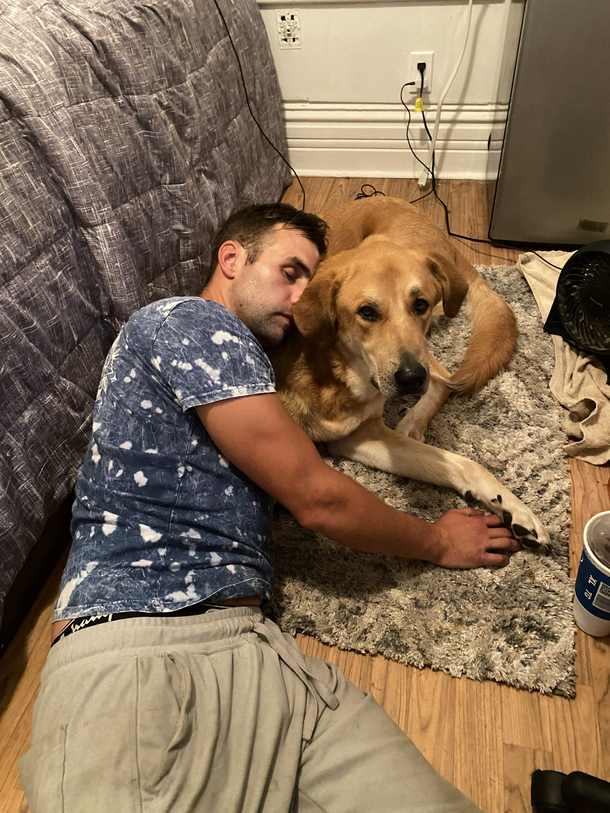

Rethinking Detox in the Age of Poly-Drug Use
When the person you're supporting has a good day in addiction, feeling motivated, hopeful, ready to chase treatment, you feel that lift too. But when the progress stalls or crashes, the frustration, despair, and hopelessness crash down on everyone. It's an exhausting emotional rollercoaster that pulls the whole family or support network along with it.
In the early 2000s, addiction treatment felt simpler. Polysubstance use was rarer, the drugs were less potent. Around 2010 to 2011 you mostly saw people coming in for straight oxycodone or hydromorphone. Today those cases are almost nostalgic. The street supply is now a toxic cocktail: illicit fentanyl, benzodiazepines, and veterinary tranquilizers like xylazine mixed together. Withdrawal is not just uncomfortable anymore. It is unpredictable, longer, and can mess with your brain in ways we are still figuring out.
That is why I am saying we need to rethink detox completely.
What most people think “detox” means
Ask anyone on the street and they picture a jail cell, a bare bed, or that scene from Trainspotting. They have no clue what withdrawal actually does to your brain, your self-talk, your spirituality, or the total absence of it. And they definitely do not know that not all detox programs are the same.
In Ottawa, when people get referred to “detox,” they are usually sent to withdrawal-management centres. These are social-model programs: safe place, counselling, relapse-prevention groups, short-term stabilization. They were built for simpler cases. They were never designed for the chemical shitstorm we are seeing now.
Withdrawal management vs. medical detox, here is the difference
In Canada you basically have two routes: social detox (withdrawal management) or medical detox.
Social detox is therapeutic, non-hospital. Think couch, support workers, group sessions. It is good for people whose withdrawal is uncomfortable but not life-threatening.
Medical detox is a higher level, hospital-style, with doctors and nurses on site and meds to manage severe symptoms. It is for the complicated stuff: alcohol, benzos, methadone, or the messy polysubstance combos we see today.
When I first started going to detox years ago, it was common knowledge: if you were coming off alcohol, benzos, or methadone you either got medical clearance or they would not admit you without a doctor’s plan. Fast-forward to 2026. The drug supply is ten times more toxic and unpredictable, yet we are still funneling people into the exact same social-model programs and hoping for the best. That is like sending the Ottawa Senators to play a high school hockey team and expecting a fair, safe game. That is not compassion. That is a recipe for disaster.
What actually happens when the system does not match the problem
I have lived it. I would be in social detox, feeling the walls close in, knowing a crisis was coming. Instead of getting stepped up to medical care I would sign myself out right before the seizure or the delirium hit. Next stop: psych ward on lockdown, or custody, or the street again.
In 2023 alone, I had three seizures, two arrests, two separate stays in a psych ward, and multiple failed self-detox attempts. That revolving door cost the system, hospitals, police, taxpayers, time and money while I stayed stuck in the cycle. It screws the community and the people struggling the most.
My own rock-bottom example

One of many low moments in 2023 while the system kept failing to match the problem.
Back when I was in custody I went through severe xylazine-related delirium. They bounced me from minimum to maximum security, then to the Ottawa General, then step-down isolation for months. My brain was fried. I could not advocate for myself, could not make basic decisions, could not even remember simple things. That is not rare anymore.
A better way forward
We do not need to scrap social detoxes. They still matter. They stop escalation early, connect people to treatment, and give families a breather. Programs like the Royal’s RAAM clinic are proof it can work when it is done right. In 2019 I sat in that questionnaire, saw the two options, higher intervention or lighter care, and I still rushed it. I lied about my last use and tried to get on buprenorphine too early. Rules exist for a reason, and I learned that the hard way.
But we also need real medical detox beds for the complex cases. Places with 24/7 clinical oversight where someone in full-blown polysubstance withdrawal is not expected to sit through group therapy while they are hallucinating or seizing.
The uncomfortable question we have to ask
Is it realistic to send our most medically and psychologically fragile people into a place they can walk out of at any moment, even when they cannot safely care for themselves? How many people on the street have already written themselves off? Hope and health are powerful. If we give people the right tools at the right time, they do not just survive. They start contributing. They pay it forward.
We would not send a roofer up a 12/12 pitch without a rope and safety harness. Why are we asking people to rebuild their lives without the right level of medical support?
The drug supply changed. It is time our detox system caught up.